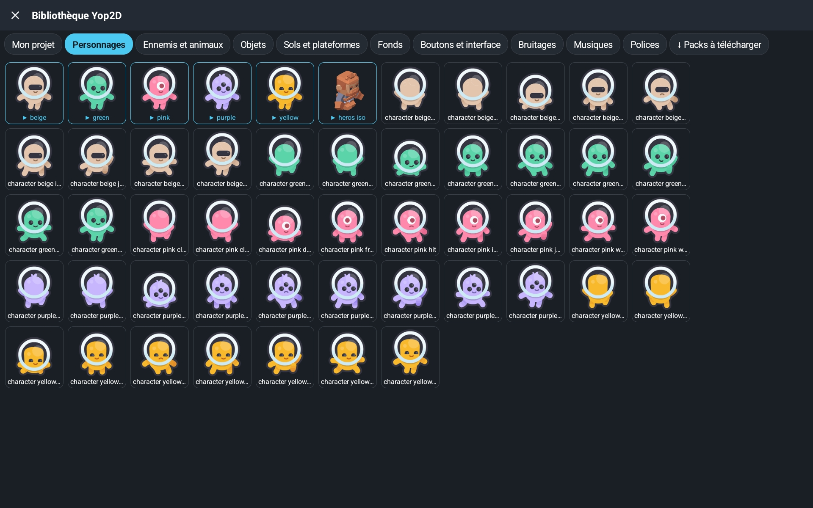

Criar uma visual novel sem programar no Android
Personagens que falam, escolhas, vários finais, tela de título com salvamento, galeria e corações de amizade: uma história com escolhas criada com o Yop2D, sem uma linha de código, num tablet Android.
Efeitos de partículas sem programar no Android
Explosões, fogo, fumaça, chuva, neve, hiperespaço, eletrocussão, congelamento de imagem, flash e fade: todos os efeitos do exemplo Effects showcase, sem uma linha de código num tablet Android.
Projetos e exportação

Na tela inicial, encontre seus projetos com as miniaturas e abra os jogos de exemplo para aprender rápido. Com um único botão, o Yop2D transforma seu jogo em um arquivo APK independente, direto no seu aparelho: sem computador, sem servidor, sem ferramentas externas.
37 modelos para aprender

Na aba "Modelos", o Yop2D pergunta "Que jogo você quer criar?": 37 pequenos projetos que mostram, cada um, uma única coisa (mover, pular, atirar, achar o caminho, uma variável, um HUD, uma pausa, partículas…), organizados por categoria. Cada modelo funciona na hora e explica na tela qual nó faz o quê. Logo no topo, o guia «Seu primeiro jogo em 5 minutos» acompanha você passo a passo.
Uma biblioteca que tem tudo

Para criar seu primeiro jogo você não precisa procurar nada fora: a biblioteca já está dentro do Yop2D. Personagens e inimigos animados, objetos, chãos e plataformas, cenários, botões, efeitos sonoros, músicas, fontes e títulos prontos: com um toque, a imagem chega ao seu jogo com todas as animações (parado, andar, pular…). Os pacotes online (Piratas, Espaço, Interface holograma, Efeitos especiais, Avião, Monstros, Gestos de toque) entram com um único botão, e tudo é de uso livre.
Editor visual de fases

Uma interface inspirada nos motores profissionais, feita para telas sensíveis ao toque. Toque em um objeto para selecioná-lo, arraste para rolar a cena e use as alças para movê-lo, redimensioná-lo ou girá-lo. Oculte ou trave qualquer objeto com um toque para não movê-lo sem querer.
Fases com tiles

Importe um tileset, pinte suas fases bloco por bloco e marque uma única vez quais blocos são sólidos. As colisões são automáticas, então jogos de plataforma e mapas vistos de cima ficam prontos rápido.
Editor de animação em tempo real

Veja num relance os quadros importados e pré-visualize suas animações 2D em tempo real, dentro do motor. No jogo, as animações seguem a pausa e a câmera lenta como todo o resto.
Títulos e efeitos de texto integrados

Crie títulos estilizados (degradês, contornos, neon, sombras, relevo, texturas, curvas) diretamente no motor, em vez de gerar imagens de texto pesadas em outros apps. Seu APK final continua leve.
Textos e diálogos em vários idiomas

Todos os textos do jogo ficam num único arquivo, editável direto no Yop2D: uma linha por idioma (ola.fr, ola.en…). O nó "Mostrar diálogo" escolhe sozinho o idioma do celular do jogador: seu jogo fala 9 idiomas sem nenhum nó a mais.
Sistema de nós visuais

Nenhum código para escrever: a lógica do jogo é montada com blocos visuais (nós) ligados entre si. 149 nós prontos para usar cobrem movimento, física, animações, som, diálogos, inventário, câmera, temporizadores e condições. Recolha cadeias inteiras de nós para manter a área de trabalho organizada. Um botão organiza todos os nós com um toque, em árvores legíveis da esquerda para a direita.
O cérebro dos seus jogos

Toque em um nó para ajustá-lo: a janela mostra primeiro sobre o que ele age (① Sobre o quê?) e depois seus ajustes (②). Escolha imagens, sons ou animações em listas e responda «sim» ou «não» com um toque. Pequenas fórmulas como score + 1 usam as variáveis, a posição do dedo, o joystick, o tempo ou as propriedades dos objetos: basta tocar uma ajuda à esquerda, e uma linha «Em palavras simples» explica a fórmula com palavras.
Jogos de exemplo incluídos

Quinze jogos de exemplo podem ser baixados na aba «Exemplos» do motor: Neon shooter (arcade de nave), Neon jump (plataforma com câmera que segue), Platformer (moedas, inimigos e 3 vidas), Climb & run (um personagem que anda, pula, agacha e sobe escadas sozinho), Maze chase (um labirinto onde duas moscas perseguem você), Pirate battle (uma batalha naval contra piratas), Candy match (alinhe 3 doces), Memory cards (encontre os pares de cartas), Nexus UI (uma interface futurista: menus, opções, loja), Firefly Night (uma história com escolhas e 4 finais), Dungeon walk e Dungeon escape (uma masmorra em visão isométrica para explorar e depois fugir), Crypt key (uma masmorra vista de cima: alçapões, espinhos, um guarda e uma chave), Lost on the moon (uma história de escolhas em 9 idiomas) e uma vitrine de todos os efeitos visuais. Abra, jogue e depois modifique para entender como tudo funciona. Ver todos os exemplos →
No tablet e no celular


O tablet é o mais confortável, mas o Yop2D também funciona em celulares Android na horizontal. Em telas pequenas, os painéis passam para um layout compacto para deixar o máximo de espaço para a cena. A barra superior desliza com o dedo e o zoom com dois dedos acompanha os seus dedos.
O que o motor sabe fazer
Nós visuais sem código
149 nós para montar a lógica do jogo ligando blocos, com fórmulas simples quando precisar.
37 modelos para iniciantes
Uma aba "Modelos" com pequenos projetos por categoria: cada um mostra uma única coisa e explica qual nó faz o quê.
Jogos de diálogo (visual novel)
Histórias com escolhas como no Ren'Py, mas sem código e no tablet: personagens com emoções que piscam e falam, texto letra por letra, palavras que tremem ou ondulam, grandes botões de escolha (cronometrados ou bloqueados), nome do jogador, histórico, 9 idiomas.
Uma visual novel de verdade, completa
Tela de título com «Continuar», salvamento automático a cada frase e 5 espaços de salvamento com foto, botão ◀ Voltar (até antes de uma escolha), finais para descobrir e galeria de fotos de lembrança, ajustes do jogador (velocidade do texto, volumes, pular só o que já foi lido), corações de amizade, retrato na caixa de texto, frases lidas em voz alta, escolhas em grandes cartas ilustradas e um mapa da história inteira no editor. Os botões cabem num único menu ☰.
Ambientes, zoom e transições
Um nó para chuva, tempestade com raios e trovões, neve, pétalas, vaga-lumes, noite, pôr do sol ou lembrança, com seus sons. Zoom suave e transições em círculo, estrela ou cortina: para todos os jogos.
Seu primeiro jogo em 5 minutos
Um guia integrado faz você criar um pequeno jogo de verdade passo a passo: testar o jogo, adicionar um nó, ligá-lo e ajustá-lo. Em cada etapa o motor mostra onde tocar.
Meu herói animado e 4 missões
Um 2º guia integrado cria um herói que corre e pula, com um chão, um cenário e uma música. Depois, 4 missões passo a passo continuam no mesmo jogo: moedas e uma pontuação, um inimigo que patrulha, uma tela «Vitória!» com confete e som e, por fim, o arquivo APK para instalar no celular. Um balão mostra onde tocar, e «✨ Faça por mim» ajuda se você travar.
Minha primeira história em 5 minutos
Um 4º guia integrado faz você escrever uma pequena história com escolhas sem importar nada nem colocar nada na cena: uma frase da Hana, uma pergunta, duas respostas, e depois é só jogar. Em cada etapa uma moldura mostra onde tocar, até dentro das janelas.
Ajustes em palavras simples
A janela de um nó mostra primeiro sobre o que ele age e depois seus ajustes. Ajudas prontas para tocar (dedo e tela, joystick, tempo, objetos, variáveis) e uma linha «Em palavras simples» que transforma cada fórmula em uma frase. Nomes simples em todo lugar: «sim / não» em vez de true / false.
Exportação de APK offline
Seu jogo vira um app Android de verdade, criado no próprio tablet ou celular, mesmo sem internet.
Cenas como objetos (prefabs)
Qualquer cena pode ser colocada como objeto dentro de outra: perfeito para uma fileira de inimigos iguais ou peças reutilizáveis.
Seleção por tag
Dê uma tag aos objetos e um único nó age sobre todos de uma vez: mover todos os inimigos, destruir todas as moedas.
Comportamentos prontos
Na janela «⚙ Comportamento do objeto», diga o que um objeto é: cenário, chão, objeto que cai, personagem de plataforma (andar, pular, escadas), personagem visto de cima ou objeto arrastado com o dedo. Suas animações (parado, andar, pular, escalar) mudam sozinhas conforme o movimento. Gravidade, quiques, colisões e «perseguir» ou «fugir» para os inimigos. Um inimigo também pode patrulhar sozinho: vai e volta, e dá meia-volta na beira do vazio ou contra uma parede.
Busca de caminho
Um personagem ou inimigo acha sozinho o caminho mais curto numa grade, contornando as paredes: labirintos, masmorras, jogos de estratégia.
Tiles
Pinte fases com um tileset e marque uma vez os blocos sólidos: as colisões são automáticas.
Grades e quebra-cabeças
Nós para preencher uma grade, alinhar 3 peças iguais e embaralhar o tabuleiro: tudo para criar um jogo de «combinar 3» como Candy match.
Visão isométrica
Os objetos passam na frente ou atrás conforme a posição, e o joystick segue as diagonais: ideal para masmorras e jogos em visão de três quartos, como Dungeon walk.
Variáveis, inventário e salvamento
Pontuação, vidas, listas de inventário, e salvar ou restaurar a partida a qualquer momento.
Controles de toque
Joysticks virtuais, botões e HUD, com multitoque: andar e pular ao mesmo tempo.
Pausa e câmera lenta
O jogo inteiro segue a pausa e a câmera lenta, enquanto seu menu de pausa continua funcionando.
Diálogos, som e câmara
Diálogos de texto, efeitos sonoros com controlo de volume, música em ciclo, câmara que segue o jogador dentro dos limites do nível, tremor de câmara e vibração.
Partículas e efeitos visuais
13 modelos de partículas (explosão, fogo, fumo, chuva, neve, hiperespaço, onda de choque…), rastos, brilho, eletrocussão, congelamento de imagem, flash, tonalidade, bordas escurecidas e fade do ecrã.
Jogos em vários idiomas
Escreva cada diálogo em vários idiomas: o jogo mostra automaticamente o idioma do telemóvel do jogador, ou o escolhido num menu.
Um editor simples e confortável
Uma barra de ferramentas reduzida ao essencial (um único botão + para objetos e cenas), um estilo sóbrio em que só a ferramenta ativa acende em azul, um seletor de cor completo, uma janela grande para escrever os textos, animações escolhidas pasta por pasta e um modo «só mover» para organizar os nós sem quebrar as ligações.
Um Inspetor claro
O objeto escolhido aparece com sua miniatura e seu nome, um cadeado para travá-lo, seções recolhíveis, controles deslizantes para opacidade e rotação, e uma corrente para manter as proporções ao mudar o tamanho.
Biblioteca Yop2D integrada
Não é preciso procurar imagens em outro lugar: cerca de 420 imagens organizadas por tema (personagens, inimigos, objetos, chãos, cenários, botões), muitas animadas («Com suas animações» configura tudo), efeitos sonoros e músicas, 10 fontes e títulos prontos. A aba «Pacotes para baixar» adiciona pacotes online (Piratas, Espaço, Interface holograma, Efeitos especiais, Avião, Monstros, Gestos de toque).
Descubra o editor
Um 3.º guia integrado explica a interface: escolher e mover um objeto, aumentá-lo e girá-lo, bloqueá-lo, desfazer, mover a vista e dar zoom. Um cartão mostra onde tocar e fica quase transparente quando você toca na cena.
Escolha seu idioma
No primeiro início, uma janela oferece os 9 idiomas, com o do telefone já selecionado. Todos os textos do motor estão traduzidos, inclusive as mensagens de erro e a exportação do APK.
Objetos organizados em pastas
Na lista de objetos da cena, crie pastas e subpastas e arraste seus objetos com o dedo. As listas de escolha (alvo de um nó, variáveis, pai) seguem essa organização, com as tags e os tipos de objetos: chega de listas sem fim.
Pixel art nítida
Uma opção das configurações do jogo mantém os pixels bem nítidos ao ampliar imagens em pixel art. Os pacotes Pré-história e Ninja da biblioteca são feitos para isso.
🏫 Na escola e para as crianças
O Yop2D foi pensado para aprender criando. As crianças podem usá-lo a partir de uns 8 anos com um adulto (pais ou professor), e sozinhas a partir dos 11-12 anos. Na sala de aula, cada aluno cria o seu próprio jogo num simples tablet.
🔒 Nenhum dado pessoal
Sem conta, sem e-mail, sem publicidade, nada para comprar. As estatísticas são anônimas e se desligam com um toque.
📶 Funciona sem internet
Depois de instalado, o Yop2D funciona offline: prático numa sala de aula sem Wi-Fi.
📱 Nos tablets da escola
Android 7 ou mais recente, mesmo em aparelhos simples. Não precisa de computador.
🌍 9 idiomas
A interface e os jogos existem em 9 idiomas: ideal também para uma aula de língua estrangeira.
🧭 Aprende-se passo a passo
«Seu primeiro jogo em 5 minutos», 37 modelos que mostram cada um uma só coisa, missões guiadas e ajustes explicados «em claro».
🎓 Modo escola
Uma interface ainda mais simples, sem conteúdo violento (explosões, armas) e sem links para redes sociais, protegida por um código do professor.
Como funciona o modo escola?
- Na tela inicial, toque no botão 🎓 ao lado de «Idioma», ligue o «Modo escola» e escolha o que muda.
- Conteúdo leve: explosões, armas e tiros somem da biblioteca, assim como os exemplos e modelos de combate e o nó «Disparar um objeto».
- Interface simplificada: só uns cinquenta nós básicos (mover, pular, variáveis, textos, sons, condições, cenas…) e nenhuma ferramenta avançada.
- Sem links externos: nada de Discord, Telegram ou pacotes para baixar.
- O professor escolhe um código de 4 dígitos: ele é pedido para mudar ou desligar o modo escola. Depois de um erro, é preciso esperar 30 segundos. O código fica no tablet, nada é enviado.
Os projetos já começados continuam funcionando: o modo escola só muda o que é oferecido.
Você é professor? Vamos construir o Yop2D juntos
Um quiz sobre a aula do dia, uma história interativa, um jogo de vocabulário em inglês… Diga-nos do que a sua turma precisa: podemos preparar modelos para as suas aulas, acrescentar um idioma ou uma função e responder às suas perguntas. O Yop2D é feito por um desenvolvedor independente que lê cada mensagem.
💬 Discord : zinzin0000 · Yop2D Discord
Guias para iniciantes
Respostas passo a passo às perguntas mais comuns dos iniciantes, escritas com os nós reais do motor. Você também pode lê-las dentro do Yop2D, na ajuda do editor de nós.
Pegar moedas e contar pontos
Uma tag, uma variável de pontos e um texto que mostra os pontos.
Perder vida e Game Over
Uma variável de vida, uma barra de vida e volta ao início quando a vida chega a 0.
Passar para a próxima fase
Uma cena por fase, uma zona de chegada e uma pontuação que continua.
Partículas e efeitos
Uma explosão ao tocar um inimigo, um rastro atrás da nave, um flash e um esmaecimento da tela.
História com escolhas (visual novel)
Uma personagem que fala, uma pergunta, vários finais, uma tela de título com “Continuar” e corações de amizade.
Referência dos nós
Todos os 149 nós do Yop2D numa só página: o que cada nó faz, suas configurações, suas saídas e um exemplo. Os nomes são exatamente os do editor de nós.
Yop2D comparado a outros motores
Existem motores de jogo excelentes. Aqui vai uma comparação honesta para ajudar você a escolher, incluindo o que o Yop2D não faz.
| Motor | Onde se cria | Como se programa | 2D / 3D | Preço | O jogo roda em |
|---|---|---|---|---|---|
| Yop2D | App Android (tablet, celular), offline | Nós visuais, sem código | 2D | Gratuito, sem anúncios | Android (APK criado no aparelho) |
| GDevelop | Computador, navegador, app para celular | Eventos, sem código (JavaScript opcional) | 2D e 3D | Gratuito e de código aberto; planos pagos para mais serviços online | Android, iOS, web, computador (versões móveis criadas online) |
| Construct 3 | Navegador (também em tablets) | Folhas de eventos, sem código (JavaScript opcional) | Principalmente 2D | Assinatura paga; versão gratuita limitada | Android, iOS, web, computador (versões móveis criadas online) |
| Godot | Computador, navegador, editor para Android | Código (GDScript, C#) | 2D e 3D | Gratuito e de código aberto | Android, iOS, web, computador |
| Ren'Py | Computador (Windows, macOS, Linux) | Script simples (linguagem Ren'Py, Python opcional) | 2D, especializado em visual novels | Gratuito e de código aberto | Computador, Android, iOS, web (versões móveis criadas no computador) |
Resumo simplificado, outubro de 2026. Os motores mudam rápido: confira os detalhes no site de cada um.
O Yop2D é para você se…
- você só tem um tablet ou celular Android, sem computador;
- você quer criar em qualquer lugar, mesmo sem internet;
- você não quer aprender uma linguagem de programação;
- você quer uma ferramenta gratuita, sem anúncios, sem assinatura e sem marca d'água nos seus jogos;
- você quer escrever uma história com escolhas (visual novel) sem aprender um script, e talvez misturar um jogo de verdade (enigmas, plataformas, lutas);
- você quer compartilhar seus jogos como apps Android com amigos, família ou alunos.
O que o Yop2D (ainda) não faz
- Seus jogos rodam só no Android: não há versão para iPhone, web ou computador.
- Ainda não exporta em AAB, o formato exigido para publicar no Google Play. Está previsto para uma versão futura.
- Só 2D.
- É um motor jovem, em fase de testes: a comunidade e o número de tutoriais ainda são pequenos, e podem ocorrer bugs.
- Não há linguagem de script para programadores experientes: tudo é feito com nós.
- O motor é gratuito, mas seu código-fonte não é público.
Quando outro motor é a melhor escolha
- Você precisa de versões do jogo para iPhone, web ou computador: GDevelop, Construct ou Godot.
- Você quer aprender programação de verdade ou fazer jogos 3D: Godot.
- Você trabalha no computador e quer um motor sem código com uma grande comunidade: GDevelop ou Construct.
- Você escreve uma visual novel longa no computador e quer a ferramenta de referência, muito completa e com uma grande comunidade: Ren'Py.
Perguntas frequentes
O que é o Yop2D?
O Yop2D é um motor de jogos 2D gratuito e sem código para Android. Ele permite que qualquer pessoa crie um videogame completo no tablet ou celular com nós visuais, sem saber programar, e exporte como APK direto no aparelho.
O Yop2D é mesmo gratuito? Tem anúncios?
Sim, o Yop2D é 100% gratuito: sem assinatura, sem compras no app, sem custos escondidos. Não há anúncios no Yop2D, e nunca haverá.
De quem são os jogos que eu crio? Posso vendê-los?
Seus jogos pertencem a você. Você pode guardá-los, dar, compartilhar ou vender, sem pedir permissão e sem pagar nada ao Yop2D.
Dá para fazer uma visual novel, como no Ren'Py?
Sim. O Yop2D tem nós feitos para jogos de diálogo: «Dizer uma frase» (personagem, emoção, texto letra por letra), «Propor uma escolha» (uma saída por resposta, cronômetro, respostas bloqueadas), «Mudar o cenário», «Pedir um texto ao jogador» (o nome dele) e «Ambiente» (chuva, tempestade, neve, noite…). Os personagens têm uma ficha com uma imagem por emoção; eles piscam e falam. Tudo é feito com o dedo, sem código, e o jogo pode ter 9 idiomas. Abra o modelo «História com escolhas» ou o exemplo Firefly Night para começar. Há também uma tela de título com «Continuar», salvamento automático e 5 espaços, o botão ◀ Voltar, finais para descobrir com galeria, ajustes do jogador, corações de amizade, leitura em voz alta e um mapa da história inteira. O guia «Minha primeira história» mostra como começar em 5 minutos.
Meus jogos têm logotipo ou marca d'água do Yop2D?
Não. Os jogos que você exporta não têm logotipo, tela de abertura nem marca d'água do Yop2D.
O Yop2D é de código aberto?
Não. O Yop2D é gratuito, mas seu código-fonte não é público. Isso não muda nada para seus jogos: eles são inteiramente seus.
Não sei programar. Isso é um problema?
De jeito nenhum. O Yop2D substitui o código por nós visuais que você liga entre si. Ele é feito para iniciantes e para criadores que preferem se concentrar no jogo. Os guias para iniciantes mostram como fazer, passo a passo.
Em quais aparelhos o Yop2D funciona?
Em tablets e celulares com Android 7.0 ou mais recente. O tablet é o mais confortável; no celular, o Yop2D funciona na horizontal com uma interface compacta. Não existe versão para iPhone, iPad ou computador.
Preciso de computador ou de internet?
Não. O Yop2D cria e exporta seu jogo como APK independente direto no seu aparelho, 100% offline. Sem compilação na nuvem, sem conta.
Posso publicar meu jogo no Google Play?
Ainda não diretamente. O Yop2D exporta arquivos APK: você pode instalar, compartilhar ou publicar em sites que aceitam APK, como o itch.io. O Google Play exige o formato AAB assinado com sua própria chave: essa exportação está prevista para uma versão futura.
Posso jogar meu jogo do Yop2D no iPhone, na web ou no computador?
Não. Os jogos feitos com o Yop2D são apps Android. Se você precisa de outras plataformas, veja a comparação com os motores que as oferecem.
Que tipos de jogos posso fazer?
Jogos 2D: plataforma, aventura vista de cima, tiro, arcade, quebra-cabeça, quiz, histórias interativas… O editor de tiles, a física, as colisões, as animações, os diálogos, o inventário e o salvamento cobrem a maioria das necessidades. O Yop2D não faz jogos 3D.
Posso usar minhas próprias imagens, sons e músicas?
Sim. Você importa suas próprias imagens, tilesets, quadros de animação, efeitos sonoros e músicas. Títulos e efeitos de texto são criados direto no motor. O motor também inclui uma biblioteca com cerca de 420 imagens (muitas animadas), efeitos sonoros, músicas, fontes e títulos prontos, com pacotes para baixar: não é preciso procurar em outro lugar para começar.
Em quais idiomas o Yop2D está disponível?
A interface, a ajuda integrada, os guias e a referência dos nós existem em 9 idiomas: português, inglês, francês, espanhol, alemão, italiano, russo, chinês simplificado e japonês.
Como aprendo a usar o Yop2D?
Comece pelo guia «Seu primeiro jogo em 5 minutos»: ele faz você criar um pequeno jogo de verdade, passo a passo, mostrando onde tocar. Abra a aba "Modelos": 37 pequenos projetos que mostram, cada um, uma única coisa, com uma explicação na tela. Depois jogue os quinze jogos de exemplo e siga os guias para iniciantes. A referência dos nós explica os 149 nós, e o canal do YouTube, o Discord e o Telegram estão aí para ajudar. No motor, o guia «Meu herói animado» e suas 4 missões passo a passo (☰ → Missões passo a passo) vão ainda mais longe, até o jogo instalado no celular. O guia «Descubra o editor» explica a interface: mover, aumentar, girar, bloquear, desfazer.
Como retomar uma missão no meio do caminho?
Abra seu projeto, toque em ☰ e depois em «Missões passo a passo» e escolha a missão. O balão recomeça do primeiro passo: toque em «Pular» para saltar os passos já feitos, ou em «◀» para voltar a um passo anterior. Uma missão concluída tem um ✓ e pode ser refeita.
Por que o Android mostra um aviso ao instalar o APK?
Porque o APK é baixado fora da Play Store. Toque em Mais detalhes e depois em Instalar assim mesmo. Você também pode entrar no teste fechado do Google Play: como ser testador.
O Yop2D coleta dados?
O Yop2D envia estatísticas de uso anônimas: abertura e fechamento, tempo de uso e relatórios de falha (só o tipo de erro), com a versão do app, a versão do Android e o idioma do aparelho. O país é estimado pela conexão, sem guardar o endereço IP. Nenhum dado pessoal e nada dos seus projetos. Você pode desativar na tela inicial, e os jogos exportados não enviam nada. Detalhes: privacidade (em inglês).
O Yop2D está pronto?
O Yop2D está em desenvolvimento ativo e em teste fechado no Google Play. Ele já permite fazer jogos completos, mas podem ocorrer bugs: exporte seus projetos regularmente como cópia de segurança e relate os problemas no Discord ou no Telegram.
Quem faz o Yop2D?
O Yop2D é criado por um desenvolvedor independente, com o retorno da sua comunidade de testadores.
Qual a diferença entre o Yop2D e o GDevelop, o Construct ou o Godot?
O Yop2D foi pensado para funcionar inteiramente num tablet ou celular Android, sem código, sem internet e sem computador, e continua gratuito e sem anúncios. Em troca, ele só faz jogos 2D para Android. Veja a comparação detalhada.
Dá para usar o Yop2D em sala de aula?
Sim. O Yop2D é gratuito, sem publicidade, sem conta e sem dados pessoais, e funciona offline em tablets Android comuns. O modo escola (botão 🎓 da tela inicial) simplifica a interface, esconde o conteúdo violento e os links externos, e é protegido por um código do professor. Os professores podem nos escrever para adaptar o Yop2D à sua turma.
O Yop2D é adequado para crianças?
Sim, a partir de uns 8 anos com um adulto (pais ou professor), e sozinhas a partir dos 11-12 anos. Os guias integrados mostram onde tocar, os modelos explicam uma coisa de cada vez e os ajustes são escritos «em claro». O modo escola deixa a interface ainda mais simples e leve.
Participe da comunidade
O Yop2D é um projeto independente em desenvolvimento ativo. Relate bugs, compartilhe seus jogos, sugira ideias ou ajude a melhorar as traduções.